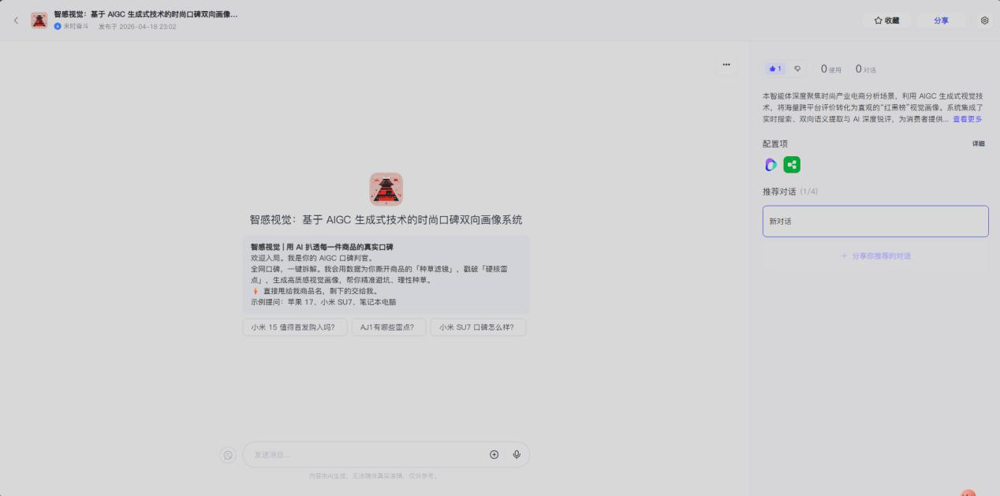
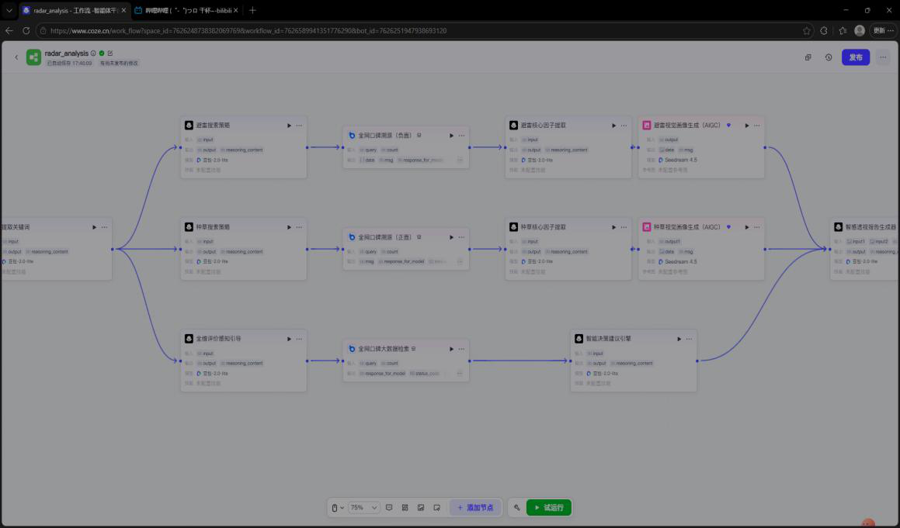
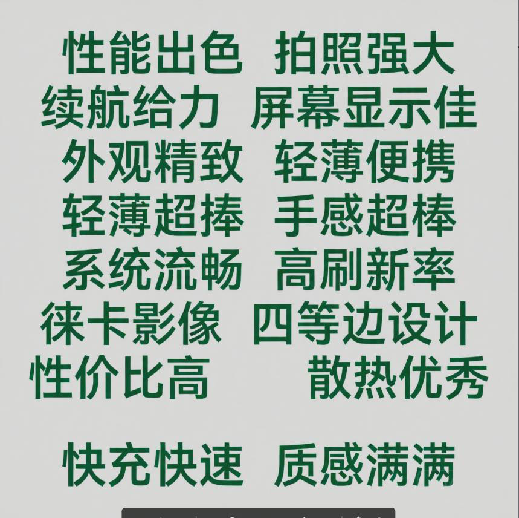
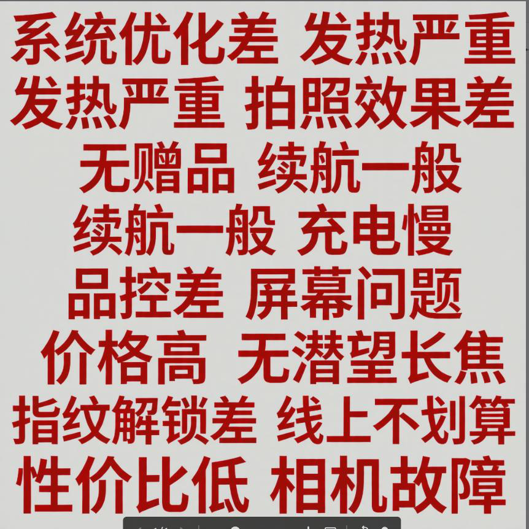

PROJECT 01
RAG 校园迎新智能问答助手
本地知识库检索增强问答系统 · 全栈独立开发
58 题自建评测集
100%Top-3 覆盖率
0%误拒率
100%无关问题拒答
LangChain BGE-small-zh-v1.5 (ONNX 量化) BM25 混合检索 ChromaDB DeepSeek + SSE 流式 Flask
- 校园 FAQ 构建本地知识库（多文件 + 来源与更新时间元数据），向量检索之外自研 BM25 词面召回做混合排序，自建 58 题评测集（含 18 题独立问法集）完成准确率验证
- 嵌入模型量化为 ONNX 本地推理，不依赖在线 Embedding 服务；命中判定采用「向量距离 + 中文主题词重合」双判据，兼顾不误答与不误拒
- 生成后对答案中的数字、日期、电话回查资料，对不上则重写或降级返回原文；Flask 后端 + SSE 流式输出，支持多轮追问改写
FAQ 知识库
→
BGE 向量 + BM25 混合检索
→
章节聚合 + 双判据判定
→
DeepSeek 生成
→
事实校验
→
SSE 流式输出
查看完整代码 → github.com/situweijian/rag-orientation-assistant-ai
PROJECT 02
智感视觉 —— 时尚口碑双向画像系统
省级比赛作品 · 基于 AIGC 的电商口碑分析与海报生成 Agent
94%避雷因子提取准确率
+40%响应提速
3 路异步并行工作流
Coze 平台 三路异步并行 Agent 博查 AI 搜索 Seedream 文生图 RAG 知识库
- 输入任意商品关键词，三路 Agent 并行抓取与分析电商口碑：避雷评测 / 种草亮点 / 避坑因子挖掘
- 分析结果自动驱动 Seedream 生成「红榜 / 黑榜」种草海报与商品分析图，形成双向消费画像
- 异步并行架构将串行链路压缩，整体响应提速 40%

系统入口：对话式交互，输入商品即可触发全链路分析

Coze 工作流：三路异步并行（避坑评测 / 种草透镜 / 避坑挖掘）汇聚生成

红榜（优点）自动生成海报

黑榜（缺点）自动生成海报
在线演示 → coze.cn/s/ka2FL30-oZo
PROJECT 03
手势识别实时交互系统
计算机视觉实训项目 · 实时摄像头手势检测
21 点手部关键点检测
31 FPS实时帧率
3 层防抖校验
MediaPipe Hands OpenCV 三层防抖状态机 EMA 平滑滤波
- MediaPipe 提取 21 个手部关键点，OpenCV 实时渲染，笔记本摄像头下稳定跑到 31 FPS
- 针对关键点抖动问题，设计「帧间校验 + 置信度门槛 + 状态确认」三层防抖，配合 EMA 平滑滤波，手势判定稳定不闪跳
摄像头采集
→
MediaPipe 21 关键点
→
三层防抖校验
→
EMA 平滑
→
手势判定 / 交互